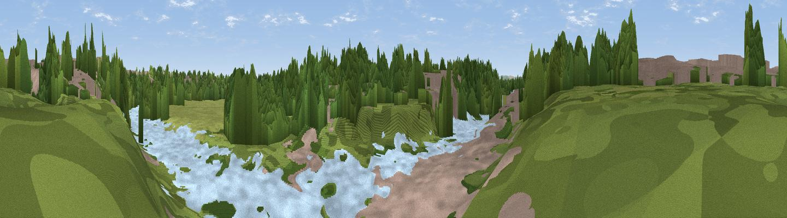

The Belvedere
#45213 in England · top 98% of its area beats it · near Queens ParkThe view, rendered

A 360° render of this exact spot computed from the terrain model, tree cover and land cover — summer colours, afternoon light, calibrated against photographs of famous viewpoints. Real trees, hedges and buildings will differ in detail.
The panorama
Grey silhouette: terrain skyline in each direction (720 bearings, Earth curvature and refraction included). Dashed green: skyline with trees (+15 m) and buildings (+8 m) as obstacles. Blue strip: how far the ground is visible on each bearing.
Where the view opens
Wedge length = distance to the farthest visible ground on that bearing (vegetation-aware). Rings at 10, 25 and 50 km.
What fills the view
49% woodland · 19% built-up · 18% water · 15% grassland
Angular shares of the visible panorama (visual magnitude), not map area. Landscape diversity 0.55 (0–1 Shannon).
Key numbers
More beautiful places nearby
The staircase of upgrades: each row has a higher view potential than everything closer. Driving times are estimates from straight-line distance, calibrated against real road routing — check an actual route before setting out.
| Place | Direction | Drive | Score |
|---|---|---|---|
| Eccleston Hill | S · 4 km | ~9 min | 33.7 |
| Viewpoint near Stoak | NNE · 7 km | ~14 min | 47.6 |
| Viewpoint near Kelsall | ENE · 12 km | ~22 min | 71.1 |
| Viewpoint near Kelsall | ENE · 12 km | ~23 min | 71.3 |
| Helsby Hill | NE · 12 km | ~23 min | 74.6 |
| Viewpoint near Harthill | SE · 15 km | ~27 min | 80.5 |
| White Brow | NNE · 52 km | ~74 min | 82.9 |
| Viewpoint near Halfway House | S · 54 km | ~76 min | 83.3 |
53.18969, -2.88086 · source: osm viewpoint · position refined by local search. Computed location — check access rights before visiting.